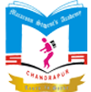

Macaroon Student’s Academy Chandrapur
About School
The school comes with an uncompromising commitment. It aims to achieve specific, measurable,
observable and quantifiable results among all aspirants/students. Because the School has a vision
to provide value based education to young minds and provide a dynamic learning environment.
However, the School aegis for every student which strives for excellence through active learning
and education. Moreover, the School has the core committed faculty which has come from accomplished
backgrounds with vast experience.
Macaroon Student’s Academy Chandrapur
Year Established School Type Medium of Language Gender
2009 Private School English Coed
Boarding Grades
Day School Class I - Class XII
Curriculum
Central Board of Secondary Education (CBSE)/ Maharashtra State Board of Secondary & Higher Secondary Education
School Level
Primary School (I-V) - Senior Secondary School (XI-XII)
The School is affiliated to CBSE Board. However, almost every school is affiliated to atleast one
board of education. The school provide all basic facilities each student. Indoor and outdoor sports are
provided by school.
The School is co-educational. This school offers education irrespective of the student’s gender.The
average students per classroom is 1:40. However, teachers and staff are well trained and
knowledgeable.the school does have transport facility.
Admission process generally begins in the month of Feb/March. The school does not have boarding
facility.The School does not believe in burdening the child yet some amount of home work is assigned
in 2-3 subjects everyday which a child himself/herself can attempt.
the school and parents together can only support the child to grow in a desired way.
Hence it holds PTMs regularly and welcome parent’s suggestions.